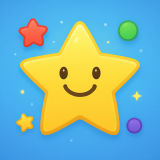

Free Online Token Board for Kids
My board
0 of 10 earned
Try all extras free for today
All icons, backgrounds, rewards and your own photos are unlocked until midnight. Free while we test — your choices help us decide what to offer.
How to use the token board
- 1
Pick the reward
Open the settings (⚙) and choose a reward. Tell the child what they are working for: "Ten stars, then the tablet."
- 2
Tap a slot for each success
Tap any empty slot to add a token, in any order. Tapped one by mistake? Tap it again to remove it.
- 3
Board full → give the reward
When the last slot fills, the board says "You did it!". Give the reward, then tap "Hooray!" to reset the board.
Works on any screen: laptop, Chromebook, iPad, phone, interactive whiteboard, or shared in Zoom / Google Meet.
Frequently asked questions
What is a token board?
A token board is a visual reward chart: a child earns a token for each success and trades a full board for a reward chosen in advance. It comes from ABA (Applied Behavior Analysis) and is used in therapy, in classrooms and at home. A research review of token economies for children with autism and intellectual disability reports improvements in engagement and on-task behavior when token systems are used consistently (Matson & Boisjoli, 2009).
How many tokens should I start with?
Start with 3 to 5 tokens for a beginner, and 10 for most kids who already know the system. Set the goal in the settings (⚙ → Token goal): tap 3, 5 or 10, or pick any number from 3 to 100. The first reward should come quickly, then you can raise the goal. If even 3 tokens are too many, use a First-Then board (one task, then the reward), for example our free First Then Board.
How do I pick a reward (reinforcer)?
Pick what the child wants right now, not what you think they should want: a short play break, a favorite toy, a snack, screen time or a special activity. Rotate rewards when one stops working, because a reinforcer only works while the child still wants it. Need ideas? See our 50 token board reward ideas.
Can I print it?
No. This board is a screen tool: it runs in the browser on a laptop, tablet, phone or whiteboard and resets with one tap. If you want a paper board, read our guide on printable vs digital token boards.
Does it work in teletherapy?
Yes. Share the browser tab or window in Zoom or Google Meet, tap the slots on your side, and the child sees each token appear. Turn on "share sound" in the sharing dialog so the child also hears the tone and the celebration.
Is it free?
Yes. The online token board is free, with no account and no ads: any token goal from 3 to 100, plus a free set of token icons, backgrounds and rewards. Some extras are locked (more icons, backgrounds, rewards and your own photos); you can unlock them all free for a day, as often as you like, while we test.
Is anything uploaded?
Everything you set, including photos, is saved only in this browser on this device. Nothing is uploaded. There are no accounts and no ad tracking; anonymous usage statistics only. Removing a photo (×) deletes it from this browser.
Also available as an app

Token Board: ABA Reward Chart is the same idea as an app for iPhone, iPad and Mac. The web board is the quick version; the app adds many saved boards, a board per child, and more icons and rewards.
- Platform
- iPhone, iPad & Mac (no Android version)
- Free
- Free to download; Token Board Plus removes the limits (plans and prices are shown in the app)
- Ads
- None; anonymous usage statistics only, no ad tracking
- Works offline
- Yes; picture-based, no reading required
- Ages
- About 2 to 12 and any learner in ABA therapy; App Store rating 4+
- Boards
- 3 to 100 tokens, 40+ token icons, photo rewards, a board per child
- Languages
- 7 (English, French, German, Italian, Polish, Portuguese, Spanish)
- Rating
- 4.6 on the App Store from 26 ratings
Most of the board is free. Some extras are locked; you can unlock them all free for a day, as often as you like, while we test.
Token board guides
Practical answers to the questions parents, teachers and therapists search for.
Using the free board
Short pages for one setting each: ABA sessions, First-Then, autism, classroom, teletherapy.